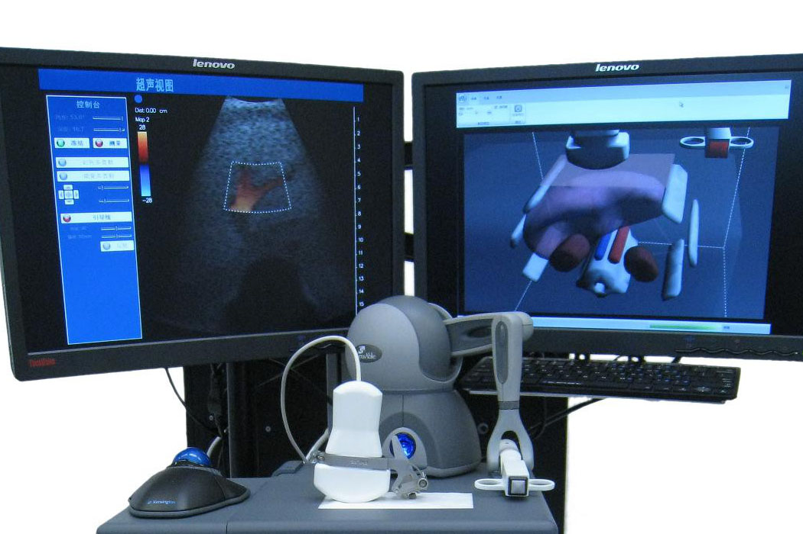
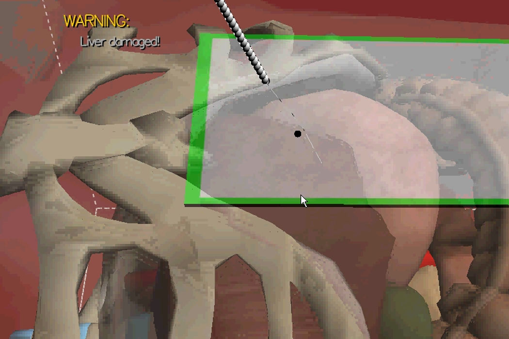

About Me
I am a sixth-year PhD student in Computer Science at Columbia University, working with Prof. Xia Zhou at the Mobile X Lab.
My research focuses on physiological sensing for health and interaction applications. Guided by physical principles and natural phenomena, I carefully design sensors to capture high-quality signals and develop computational pipelines to extract meaningful information. Through hardware–software co-design, I integrate novel sensors, ubiquitous computing, and aesthetics into robust and reliable systems.
Education
2022 - 2026
Columbia University
2020 - 2022Dartmouth College
Ph.D. in Computer Science
Advisor: Prof. Xia Zhou
2015 - 2018
M.Phil. in Computer Science
The Chinese University of Hong Kong
Supervisors: Prof. Chi-Wing Fu, Prof. Pheng-Ann Heng
Thesis
2009 - 2012
B.Sc. in Computer Science
The Chinese University of Hong Kong
Publications
My Pillow Knows My Sleep: Sleep Monitoring with Computational Fabrics in the Pillowcasey
Qijia Shao, Junxiao Chen, Ho Man Colman Leung, Meiqi Zhao, Ruoyu Xu, Jiting Liu, Lisa Maria DiSalvo García, Xiaofan Jiang, Marie-Pierre St-Onge, Xia Zhou
Proceedings of the ACM on Interactive, Mobile, Wearable and Ubiquitous Technologies 9.3 (2025): 1-26.
Fabric Sensing of Intrinsic Hand Muscle Activity
Katelyn Lee, Runsheng Wang, Ava Chen, Lauren Winterbottom, Ho Man Colman Leung, Lisa Maria DiSalvo, Iris Xu, Jingxi Xu, Dawn M Nilsen, Joel Stein, Xia Zhou, Matei Ciocarlie
2025 International Conference On Rehabilitation Robotics (ICORR). IEEE, 2025.
Preliminary Accuracy Analysis of a Noninvasive Optical Glucose Sensing Prototype
Luke Geiser, Ho Man Colman Leung, Cari Berget, Chengyue Gong, Qiang Liu, Xia Zhou, Gregory P Forlenza
Diabetes 72.Supplement_1 (2023): 119-LB.
Presented in ADA 2023.
A Portable Solution to Noninvasive Glucose Sensing with Light
Ho Man Colman Leung, Tianxing Li, Temiloluwa Prioleau, Tam Vu, Gregory Forlenza, Xia Zhou
Adjunct Proceedings of the 2022 ACM International Joint Conference on Pervasive and Ubiquitous Computing and the 2022 ACM International Symposium on Wearable Computers. 2022.
Presented in UBICOMP 2022.
Teaching
Columbia University
CSEE4119 - Computer Networks, Teaching Assistant • Spring 2024 & Spring 2025Dartmouth College
CS 60 - Computer Networks, Teaching Assistant • Spring 2021The Chinese University of Hong Kong
Final Year Project Tutor • Fall 2016 - Spring 2017CSCI3260 - Principle of Computer Graphics, Teaching Assistant (Certificate of Merit) • Spring 2016
CSCI1130 - Introduction to Computing using Java, Teaching Assistant • Fall 2015
Work Experience
2018 - 2020
2012 - 2015
Research Associate
Department of Computer Science and Engineering, The Chinese University of Hong Kong
Developed a robust multi-camera, multi-object 6DoF real-time tracking system for medical simulators, with performance boosted through CUDA parallelization and pipelined execution.2012 - 2015
Software Engineer
Dracaena Life Technologies Co., Ltd., Hong Kong
- Designed an anatomy visualization tool with stereoscopic 3D and Leap Motion mid-air gestures for immersive learning; deployed at PolyU School of Nursing with positive user study results (link).
Virtual Acupuncture
Developed a Traditional Chinese Acupuncture Simulation System by extending an Interventional Sonography Trainer, adding rotary encoders and Arduino-based sensors to capture needle rotation.Interventional Sonography Training System
Implemented stereoscopic rendering and head tracking 3D simulation using Kinect.Skills
Software Development
Programming: C, C++, C#, Objective-C, Java, Python, MATLAB, GLSL, and more
Libraries: OpenGL, OpenCV, Boost, CUDA, TensorFlow, PyTorch
Platforms: iOS, Android, Windows, Arduino, Unity, Web
Hardware Fabrication
Design Tools: Autodesk Fusion, Inkscape
Techniques: 3D Printing, Soldering, PCB Design, Embroidery
Designing
Adobe Creative Suite (Photoshop, Illustrator, InDesign, Premiere Pro, After Effects)
Spoken Languages
Cantonese, English, Mandarin, Spanish (Duolingo beginner)
Interests
Sports - Badminton and Dragon Boat
Music - Piano and Cello
Arts - Graphic Design see my designs

VR-Anatomy
I designed the system architecture and developed the anatomy visualizer for educational purposes. The system is equipped with stereoscopic 3D visualization that provides an immersive learning environment inside a lecture theatre. It also features mid-air gestures using Leap Motion for interactive navigation.
The system is deployed in Faculty of Health and Social Sciences in The Hong Kong Polytechnic University which is used to teach nursing students. A user study was conducted showing positive feedback from the users.
Anatomy Exploration TooliSonoSim
This is the first project I worked on in Dracaena LifeTech. It is a medical simulator which provides training to novice doctors by simulating ultrasound images. I developed automation tools for testing the system's integrity and extended the system to simulate X-Ray images and MRI images. I also implemented stereoscopic 3D rendering using nVidia 3D Vision and 3D simulation using head tracking with Kinect.
Training SimulatorVirtual Acupuncture
This acupuncture simulator was developed base on Interventional Sonography Training System. Since acupuncturists perform various manipulations including twisting the needle to achieve a "deqi" response, we installed a rotary encoder at the needle and connected it to an arduino microcontroller to measure the needle's rotation.
Training SimulatorUniversity Dragon Boat Team Recruitment Poster
2017
This is a poster I designed for the team recruitment. The poster features a high-resolution photo of our team, where the crew is highlighted.
DesignAsia Food Expo
2014
This is a freelance project which I designed for Asia Food Expo (Spring). I decided to use pink as the theme color as it corresponds to the sakura flower that blossoms in spring.
DesignKing's College Chinese Orchestra 45th Anniversary Concert
2013
The booklet of the King's College Chinese Orchestra 45th Anniversary Concert is typeset by me. Shown above are some of the pages inside the 40-page booklet.
Design2012 Graduate Yearbook
2012
I designed the cover of my college's 2012 graduate yearbook. Hidden inside is the Chinese characters "崇基" which is the Chinese name of Chung Chi College. While I prefer the Blue-Silver version, the Red-Gold version is used instead.
DesignChung Chi College 60th Anniversary Celebration
2011
I lead the Publish and Design Team and designed the logo, which is the chinese character of "dream". I also designed a computer wallpaper and a set of postcards. Three selected postcards are displayed above.
DesignChung Chi College 59th Carnival
2010
I designed the logos, posters, and banners to promote the Carnival with over a hundred stalls and live music shows. The theme of the carnival is "market", and so elements that can be found inside a market such as meats, fruits, and vegetables can be seen inside the design.
DesignThe Fig Tree
2008
The Fig Tree is the name of the yearbook of my secondary school featuring photos taken inside the campus.
Design